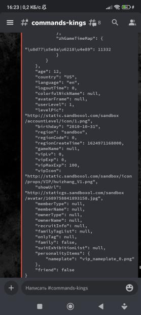
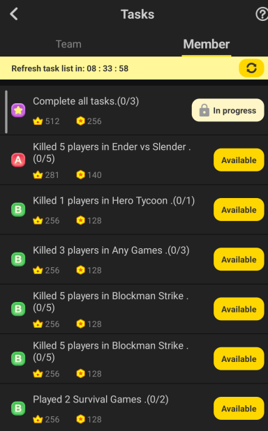

This command spam opponent's friend request, bot will automatically send friend request to opponent /spam <id> <message>

This command show you opponent's account info /info <id>
This command show criex's bot status /load
This command increase opponent profile popularity amounts, bot will automatically send likes to opponent player profile /popularity <id>
This command get a clan's id by writing their name /searchclan <clanname>
This command will make bots delete your friend from their account friend list /rmbots <id>
This command will make bot send request to opponent clan /joinclan <clanid>
This command make bot leave from clan /leaveclan <clanid>
This command increase opponent's bedwars profile popularity amounts, bot will automatically send likes to opponent bw profile /bwlike <id>
This command increase opponent's bedwars profile fans amounts, bot will automatically follow opponent /bwsubs <id>
This command increase opponent's bedwars profile visitor amounts, bot will automatically visit opponent's bw profile /spambw <id>
This command shows which server opponent is playing now /gaming <id>
This command add a personal account and you can use it on dupetask, clothtickets cmd and others /addaccount
This command let opponent get a clothes ticket (3 per day), bot automatically login account and watch cloth ticket ads /clothtickets <select account>
This command turn opponent's add friend methods into allow everyone /accepting <id>
This command will make opponent invited to a chat that is with the GPT bot /invite <id>
This command shows your personal accounts list /showaccount
This command shows your account chat's id, and you can use flooding cmd with groupid /showchats <select account>
This command will make bot flooding group chat's message with player quitting group message /fluder <groupid>
This command will make bot automatically login your account watch ads and you get free items (only for some games) /giveitem <select account>

This command make bot automatically login your account and dupe clan personal and team tasks /dupetask <type>
This command make an illegal clan desc or tags /editclan <name> <details> (<tags...>)
This command make bot flooding opponent clan invite /clanfluder <id> <text>